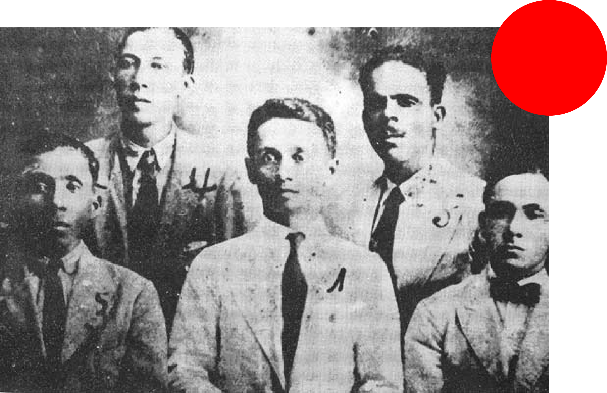

In the early hours of the morning, thousands of striking banana workers and their families were murdered in Ciénaga, Colombia, in an event that continues to be remembered as El Masacre de las Bananeras, or The Banana Massacre of 1928.
Pedro M. del Río, Bernardino Guerrero, Raúl Eduardo Mahecha, Nicanor Serrano, and Erasmo Coronel, leaders of the strike, were all workers in the Santa Marta Division of the banana plantations owned by the Boston-based United Fruit Company, now known as Chiquita.
At the time, workers were complaining of incredibly long work days, extremely low pay, and a subcontract system that meant labourers were not considered “employees” of the UFC, and therefore didn’t qualify for any of their benefits. Workers earned 2 pesos for a full day or labour, equivalent to $0.13 Canadian.
On October 6, 1928, workers began preparing themselves to strike. They drafted up a list of nine demands
- Collective insurance
- Security against work-related accidents
- Clean living conditions & one day of rest every week
- A 50% increase in wages for lower-paid workers
- Workers were forced to shop in company-owned stores which hurt local businesses; they wanted this practice discontinued
- Elimination of the use of credit slips instead of money
- Weekly, rather than bi-weekly, payments
- Direct contracts with the company
- Enough hospitals & proper sanitation camps for the population of workers
October 7, 1928
Three of the strike organizers–Erasmo Coronel, Nicanor Serrano and Pedro M. del Río– were appointed as strike negotiators and headed up to Santa Marta to present their nine demands at the UFC headquarters. Thomas Bradshaw, the company’s general manager, refused to meet with them.
October 28, 1928
The strike negotiators tried again and Bradshaw told them to leave, insisting that the workers weren’t official employees of the United Fruit Company, regardless of the fact that they provided most of the company’s labour.
November 6, 1928
The workers gave the company an ultimatum, saying that they would go on strike unless their nine demands were negotiated. The next day, a strike began and thousands withdrew their labour.
A statement read as follows:
“The workers of the Banana Zone comply with all of the laws of the country and, today, in declaring a strike, they obey the law to vindicate their rights, which are violated daily by the powerful Fruit Company, who looks at the worker with indifference as he wears himself out with ulcers, malaria, tuberculosis and other diseases, without even a humane sentiment that would move the company to comply with the labour legislation.”
The United Fruit Company soon began paying the Colombian military to keep an eye on the strikers, erasing any sense of solidarity that could exist between the soldiers and workers.
By the fifth week of the strike, General Carlos Cortés Vargas and the Colombian government militarized the banana zone. To block trains loaded with soldiers from continuing to the port, women and children sat on the tracks.
December 5, 1928. Midnight
General Cortés Vargas received a telegram; the Colombian government had officially declared a state of emergency in the Banana Zone (Decree 1).
General Cortés Vargas wrote the following:
Article 1: In compliance with Legislative Decree 1 of 5 December 1928, I order the immediate dissolution of any meeting of more than three individuals.
Article 2: The government forces are ordered to strictly comply with this Decree, firing at the multitude if necessary.
Article 3: No person can move after the military bugle sounds.
December 6, 1928. 1:30am
The striking workers were told that the governor of Magdalena wanted them to settle the strike in the nearby town of Ciénaga. Outside the town’s main train station, workers and their families gathered by the hundreds.
An account tells that Raúl Eduardo Mahecha began warning strikers to go home. He believed the military was setting them up, but was called a coward.
General Cortés Vargas ordered all his troops to march to the train station armed with their machine guns. People refused to move. Vargas ordered the crowd, “you have five minutes to disperse,” but the striking banana workers stood their ground.
After the five minutes were up, Vargas threatened one more time– “I’ll give you an extra minute.”
From the crowd, someone yelled, “You can have your extra minute.”
The soldiers opened fire.
People told of garbage trucks driving through the streets that dawn, gathering bodies to dump into the Magdalena River.
The United Fruit Company strategically deflected focus from themselves towards the Colombian military who silenced the strikers in order to satisfy the needs of the company. The facts and figures of the massacre have become obscured by politics, but an archive of telegrams sent from the UFC headquarters in Santa Marta to Washington D.C tells us a lot of what we need to know. One of the most striking ones reads:
“Sir:
With reference to my previous reports concerning the Santa Marta strike...I have the honor to report that the Bogotá representative of the United Fruit Company told me yesterday that the total number of strikers killed by the Colombian military exceeded one thousand.
I have the honor to be, Sir,
Your obedient servant,
Jefferson Gaffery."